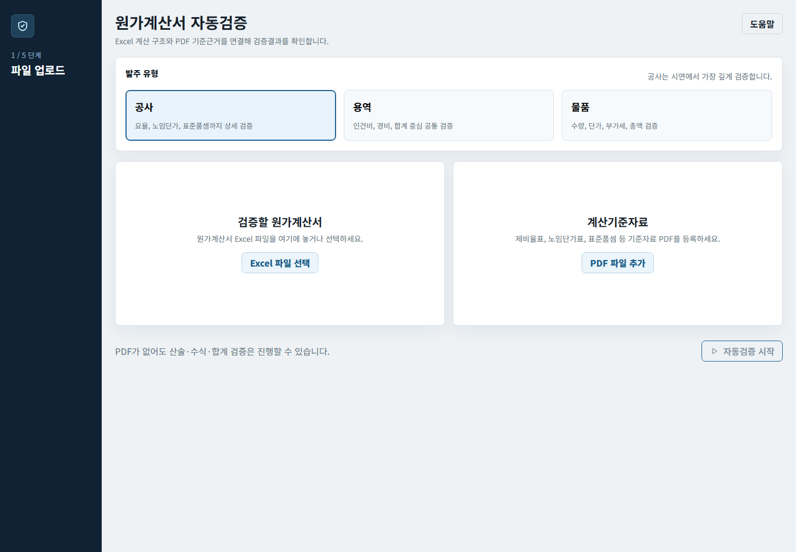
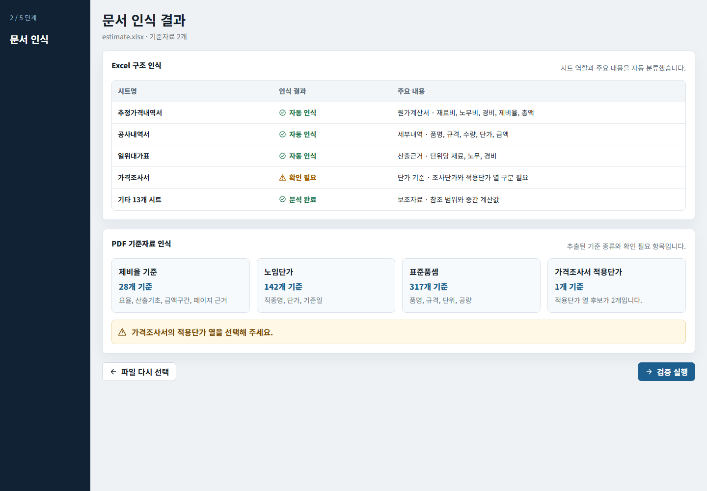
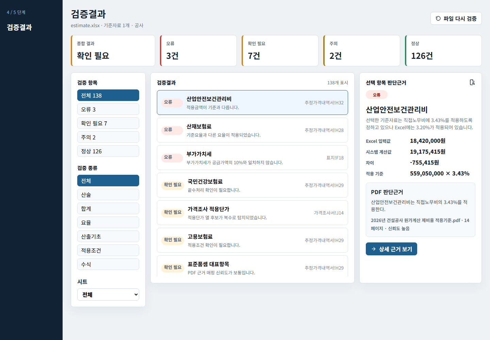
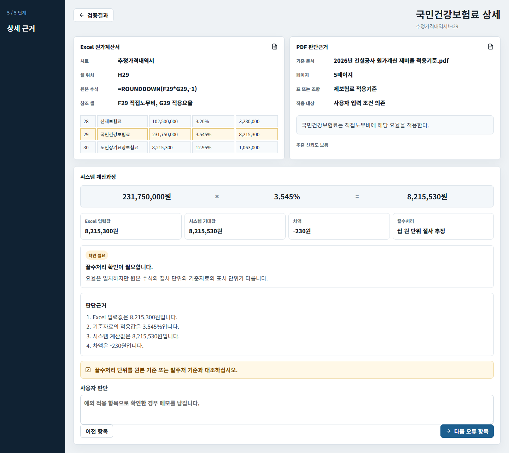

현재는 AI 없이 규칙 기반으로 원가계산서의 수식, 적용 요율, 산출금액과 노임단가를 검증하는 단계까지 구현했습니다. 공고문 생성과 관련 법령 수집은 아직 구현하지 않았습니다.
3종원가계산서·제비율표·노임단가표
규칙 기반AI 없이 재현 가능한 숫자 판정
4개 축수식·요율·금액·노임단가 검증
현재1차 검증 MVP 배포 완료
01 · PROJECT
무엇을, 왜 만드는가
제품의 전체 비전과 지금 구현한 범위를 구분해 팀원이 현재 위치를 오해하지 않도록 합니다.
복사·수정 과정에서 생기는 금액·수식·부가세·날짜·법령 누락을 단계적으로 줄이는 것이 전체 비전입니다.
현재 구현
원가계산서 규칙 기반 검증
단순히 수식이 연결됐는지만 보는 것이 아니라 기준 요율을 맞게 적용했는지, 산출기초×요율 금액이 맞는지, 노임단가를 맞게 가져왔는지까지 비교하고 원본 셀 근거를 보여줍니다.
아직 미구현
공고문·관련 법령 기능
공고문 초안 생성, 법령 자동 수집·해석·추천은 아직 구현하지 않았습니다. 현재 결과물은 원가검증 단계까지입니다.
02 · IMPLEMENTATION BOUNDARY
현재 구현한 것과 구현하지 않은 것
발표나 인수인계에서 가장 먼저 공유해야 할 범위입니다.
구현됨
AI 없는 결정론적 검증
Excel 수식 저장값과 재계산값 비교
공급가액·부가세·총액 검증
원가계산서 적용 요율과 제비율표 요율 비교
산출기초×기준요율 기대금액과 실제금액 비교
직종별 적용 단가와 노임단가표 비교
원본·기준자료 시트와 셀 근거 표시
구현되지 않음
후속 제품 기능
공고문 초안 작성과 날짜·법령 자동 반영
관련 법령 웹 수집·최신성 확인·내용 해석
모든 제비율 조건 조합의 정확한 자동선택
AI를 이용한 항목명·문장·법령 해석
AI 적용 원칙 현행 숫자 검증은 AI 없이 유지합니다. 필요하면 향후 AI API를 항목명 매핑 후보, 모호한 조건 설명, 관련 법령 요약에 보조적으로 붙일 수 있습니다. AI를 추가하더라도 요율·금액·오류 여부의 최종 판정은 재현 가능한 규칙 엔진이 담당합니다.
03 · PARSING PIPELINE
원가계산서를 어떻게 파싱했는가
한 시트의 보이는 값만 복사한 것이 아니라, 모든 셀의 원본 정보와 참조 관계를 먼저 보존한 뒤 표준 항목으로 변환했습니다.
STEP 01전체 시트 읽기SheetJS로 첫 시트만이 아니라 통합문서의 모든 시트와 숨김 여부를 읽습니다.STEP 02셀 단위 IR 생성시트명·주소·자료형·원값·수식·저장값·표시값·서식·병합범위를 보존합니다.STEP 03시트 역할 분류표지·원가계산·공사내역·일위대가·물량·단가·노임·제비율·기타로 구분합니다.STEP 04항목명 표준화공백·기호 차이를 정리하고 산재보험료, 간접노무비, 일반관리비, 이윤, VAT 등의 표준 항목에 연결합니다.STEP 05행과 참조 추적항목명 주변에서 요율 셀과 금액 셀을 찾고, 수식이 있으면 직접·타 시트 참조를 함께 남깁니다.STEP 06정규화 행 생성항목명·산출기초·요율·금액·수식·원본 셀을 한 행으로 만들고 검증 결과를 결합합니다.
단계
원본에서 읽는 정보
중간 표현(Workbook IR)
정규화 결과
검증에 쓰는 방식
예시 항목
원가계산서!D32 “산업안전보건관리비”
sheetName: 원가계산서 address: D32 dataType: string
canonicalName: 산업안전보건관리비 sourceCell: D32
원본 항목과 외부 제비율표 기준을 연결
요율·금액
같은 행의 3.10% 수식 셀과 저장된 금액
rawValue / formula / cachedValue references: 직접·타 시트 셀
rate: 0.031 amount·formula·references
외부 기준요율과 비교하고 산출기초×요율 금액 재계산
여기서 ‘원가계산서 파싱 성공’의 의미 주요 원가 항목을 표준 이름의 행으로 만들고, 수식·값·원본 셀·직접 참조를 잃지 않은 채 검증 화면까지 연결했다는 뜻입니다. 다만 직접재료비처럼 여러 시트를 여러 단계로 거쳐 계산되는 항목의 전체 계보까지 완전히 해석했다는 뜻은 아닙니다. 위 표의 셀 주소와 숫자는 흐름 설명을 위한 예시입니다.
SOURCE OF TRUTH
제비율·노임단가 판정 기준의 우선순위
원가계산서 안에 같은 이름의 시트가 있어도, 그 값이 기준자료로 자동 승격되지는 않습니다.
1순위사용자가 직접 수정한 기준값
검증 전 사용자가 수기로 입력·수정한 값이 있으면 최종 기준으로 사용합니다.
2순위별도로 첨부한 외부 기준자료
사용자가 업로드한 외부 제비율표 Excel과 외부 노임단가표 Excel을 공식 비교 기준으로 사용합니다.
검증 대상 안의 시트구조·적용값 확인용
원가계산서 통합문서 안의 제비율·노임 시트는 적용값과 참조 구조를 파악하는 자료일 뿐, 판정 기준으로 조용히 대체하지 않습니다.
외부 기준자료가 없거나 파싱에 실패하면 원가계산서 내부 시트 값을 임의의 정답으로 사용하지 않고 ‘기준 없음·검증 불가’ 또는 ‘수기 입력 필요’로 표시합니다. 노임단가 비교도 사용자가 별도로 첨부한 외부 노임단가표를 기준으로 수행합니다.
04 · HOW IT WORKS
무엇을 넣고, 어떻게 판단하고, 무엇을 받는가
기능 설명을 실제 예시와 함께 보여줘 비개발자도 검증 방식을 이해할 수 있게 합니다.
입력
검증 대상 원가계산서 Excel
사용자가 별도로 첨부한 외부 제비율표 Excel
사용자가 별도로 첨부한 외부 노임단가표 Excel
표준품셈 PDF(선택)
→
판단
저장값과 수식 재계산 비교
공급가액 + 부가세 = 합계
외부 기준 요율·노임단가 비교
시트·셀 근거 추적
→
출력
오류·주의·정상 상태
실제값·기대값·차이
판단 이유와 권장 조치
정규화 원가계산서
검증 항목
원가계산서 입력
시스템 기준
판정
사용자가 확인할 내용
산업안전보건관리비
3.10% · 3,100,000원
외부 제비율표 3.20% · 3,200,000원
오류
적용 요율과 금액 차이 −100,000원
총액
110,000,000원
공급가액 100,000,000 + VAT 10,000,000
정상
합계 수식과 결과가 일치
배관공 노임단가
268,000원
외부 노임단가표 271,000원
오류
외부 기준표 셀과 적용단가 차이 3,000원
05 · USER FLOW
사용자가 실제로 보는 순서
아래 네 장은 현재 구현된 앱의 실제 화면입니다. 이미지를 클릭하면 큰 화면으로 확인할 수 있습니다.
STEP 01파일 업로드검증 대상과 외부 기준자료 선택
STEP 02문서 인식시트·수식·기준 확인
STEP 03검증 실행산술·요율 모드 선택
STEP 04결과 요약오류와 확인 필요 선별
STEP 05상세 근거셀·계산식·권장조치 확인

① 입력 화면원가계산서와 별도로 첨부한 외부 제비율표·노임단가표를 등록합니다.

② 인식 결과읽힌 시트와 기준요율을 검증 전에 확인합니다.

③ 결과 요약오류·확인 필요·정상 건수와 정규화 표를 봅니다.

④ 상세 근거원본 셀, 시스템 계산, 외부 기준자료와 권장 조치를 확인합니다.
04 · PROGRESS
어디까지 진행됐는가
막연한 퍼센트 대신 단계별 산출물과 남은 작업을 함께 보여줍니다.
기획PRD와 검증 범위 정리 완료
화면설계업로드·인식·결과·상세 화면 완료
1차 개발Workbook IR과 규칙 검증 구현
테스트·배포빌드·회귀 테스트·GitHub 반영
정규화 확장설계·계획 완료 후 현재 중단
영역
완료된 것
현재 상태
다음 완료 기준
원가계산서
기본 파싱, 수식·합계 검증, 정규화 표
동작 확인
여러 시트의 계산 계보 보강
제비율표
일부 요율과 셀 근거 추출
개선 필요
조건 조합 전체 보존·적용 규칙 선택
노임단가표
직종명·단가 추출과 비교
기본 동작
미공표·표식 행까지 보존
정규화 검수실
UX와 14개 구현 작업 설계
구현 전
세 문서 탭·근거 패널 구현
05 · TEAM GUIDE
팀원이 꼭 알아야 할 운영 기준
앱 결과를 과신하거나 입력 준비를 놓치지 않도록 사용 전제와 한계를 한곳에 모읍니다.
입력 파일 준비
Excel에서 수식을 다시 계산한 뒤 저장
원본 수식과 일반적인 항목명 유지
암호·외부 연결·매크로 의존 파일은 별도 확인
결과 해석
오류: 기준과 명확히 다름
확인 필요: 절사·예외 가능성 검토
검증 불가: 기준 또는 탐지 정보 부족
현재 보장하지 않는 것
법적·계약적 적정성의 최종 보증
모든 Excel 함수와 외부 연결 재계산
모든 제비율 조건의 정확한 자동선택
실행·산출물
pnpm install → pnpm run dev
웹 검증결과와 Workbook IR JSON
코드·문서·계획은 GitHub에서 공유
판정
현재 기준
팀원이 할 일
수식 재계산
차이 1원 이하 정상, 1원 초과 10원 미만 확인 필요, 10원 이상 오류
원본의 절사·반올림 규칙 확인
총액·요율·노임
현재 허용 차이 1원
기준자료 버전과 적용조건 확인
제비율표
추출 성공만으로 해당 공사에 적합하다고 확정하지 않음
공사 종류·금액·기간을 원본 표에서 교차검토
07 · BLOCKERS
현재 가장 큰 문제
‘안 된다’에서 끝내지 않고 왜 어려운지와 필요한 도움을 함께 적습니다.
제비율표 조건 파싱이 부정확함
병합된 다단 헤더 아래에 공사 종류·금액·기간·발주 방식 조건이 흩어져 있어 첫 숫자만 읽으면 잘못된 요율이 선택됩니다. 값 셀에서 상위·좌측 헤더를 역추적하는 구조 기반 파서가 필요합니다.
다른 시트 원가 항목 추적이 부족함
직접재료비 등이 상세 시트 → 일위대가 → 공사내역 → 원가계산서로 이어질 수 있습니다. 현재는 직접 셀 참조를 보존하지만 여러 단계의 계산 의미까지 안정적으로 연결하지 못합니다.
법령 수집·검토는 아직 미구현
관련 법령을 웹에서 가져오거나 최신성을 확인하고, 공사 조건에 맞는 조항을 해석·추천하는 기능은 구현하지 않았습니다. 현재 화면의 근거는 Excel 셀과 규칙 계산 중심입니다.
강사·수업에 요청할 도움 ① 병합 셀과 다단 헤더를 일반화해서 파싱하는 방법 ② Excel 수식의 시트 간 참조 그래프를 만들고 원가 항목 의미를 연결하는 방법 ③ 규칙 엔진과 선택적 AI·법령 데이터 연동의 경계를 정하는 방법